testimage
The images below can be loaded via testimage(filename).
| Image | Name | Color | Size | Note |
|---|---|---|---|---|
| 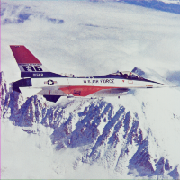 | Airplane (F-16), airplaneF16.tiff | RGB | (512, 512) | origin, by USC-SIPI Image Database |
Autum Leaves, autumn_leaves.png | RGBA | (105, 140) | origin | |
| 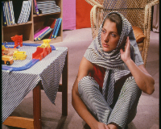 | barbara_color.png | RGB | (576, 720) | |
| 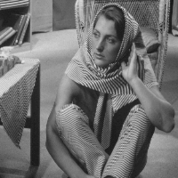 | barbara_gray_512.bmp | RGB | (512, 512) | |
| 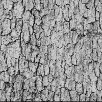 | Brodatz - Bark (D12), bark_512.tiff | Gray | (512, 512) | origin, by Phil Brodatz |
| 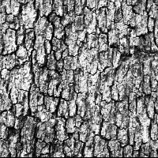 | Brodatz - Bark (D12) Histogram Equalized, bark_he_512.tiff | Gray | (512, 512) | origin, by Phil Brodatz |
| 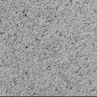 | Brodatz - Beach sand (D29), beach_sand_512.tiff | Gray | (512, 512) | origin, by Phil Brodatz |
 | Brodatz - Beach sand (D29) Histogram Equalized, beach_sand_he_512.tiff | Gray | (512, 512) | origin, by Phil Brodatz |
| 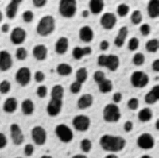 | blobs.gif | RGB | (254, 256) | |
| 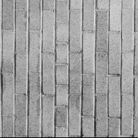 | Brodatz - Brick wall (D94), brick_wall_512.tiff | Gray | (512, 512) | origin, by Phil Brodatz |
| 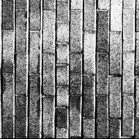 | Brodatz - Brick wall (D94) Histogram Equalized, brick_wall_he_512.tiff | Gray | (512, 512) | origin, by Phil Brodatz |
| 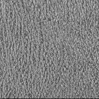 | Brodatz - Pressed calf leather (D24), calf_leather_512.tiff | Gray | (512, 512) | origin, by Phil Brodatz |
| 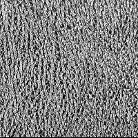 | Brodatz - Pressed calf leather (D24) Histogram Equalized, calf_leather_he_512.tiff | Gray | (512, 512) | origin, by Phil Brodatz |
| 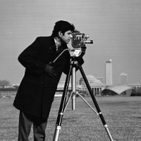 | cameraman.tif | Gray | (512, 512) | |
| 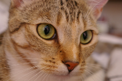 | Chelsea, chelsea.png | RGB | (300, 451) | origin, by Stefan van der Walt |
coffee, coffee.png | RGB | (400, 600) | origin, by Rachel Michetti | |
| 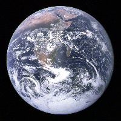 | earth_apollo17.jpg | RGB | (3002, 3000) | origin |
fabio_color_256.png | RGB | (256, 256) | ||
fabio_color_512.png | RGB | (512, 512) | ||
fabio_gray_256.png | Gray | (256, 256) | ||
fabio_gray_512.png | Gray | (512, 512) | ||
| 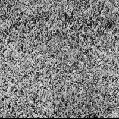 | Brodatz - Grass (D9), grass_512.tiff | Gray | (512, 512) | origin, by Phil Brodatz |
| 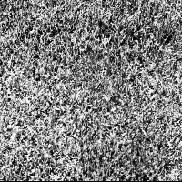 | Brodatz - Grass (D9) Histogram Equalized, grass_he_512.tiff | Gray | (512, 512) | origin, by Phil Brodatz |
hela-cells.tif | RGB | (512, 672) | ||
| 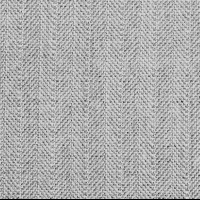 | Brodatz - Herringbone weave (D15), herringbone_weave_512.tiff | Gray | (512, 512) | origin, by Phil Brodatz |
| 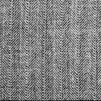 | Brodatz - Herringbone weave (D15) Histogram Equalized, herringbone_weave_he_512.tiff | Gray | (512, 512) | origin, by Phil Brodatz |
| 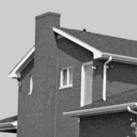 | house.tif | GrayA | (512, 512) | |
jetplane.tif | GrayA | (512, 512) | ||
| 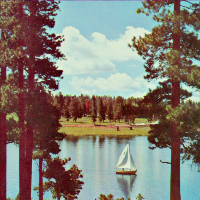 | Sailboat on lake, lake_color.tif | RGB | (512, 512) | origin |
| 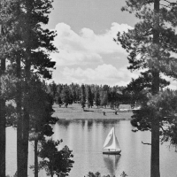 | lake_gray.tif | GrayA | (512, 512) | |
| 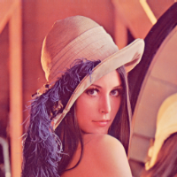 | lena_color_256.tif | RGB | (256, 256) | |
| 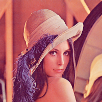 | lena_color_512.tif | RGB | (512, 512) | |
lena_gray_16bit.png | Gray | (256, 256) | ||
| 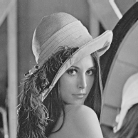 | lena_gray_256.tif | Gray | (256, 256) | |
lena_gray_512.tif | Gray | (512, 512) | origin | |
lighthouse.png | RGB | (512, 768) | origin | |
| 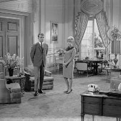 | livingroom.tif | Gray | (512, 512) | |
 | m51.tif | Gray | (510, 320) | |
| 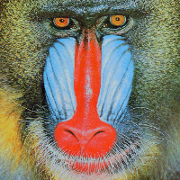 | mandril_color.tif | RGB | (512, 512) | origin |
| 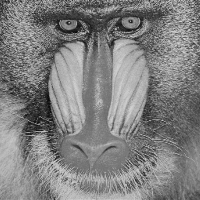 | mandril_gray.tif | Gray | (512, 512) | |
| 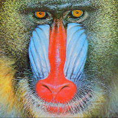 | mandrill.tiff | RGB | (512, 512) | |
| 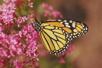 | monarch_color.png | RGB | (512, 768) | |
| 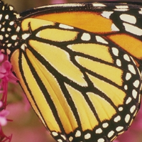 | monarch_color_256.png | RGB | (256, 256) | |
| 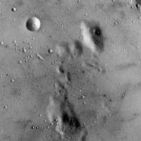 | moonsurface.tiff | Gray | (256, 256) | |
| 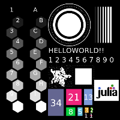 | morphology_test_512.tiff | RGB | (512, 512) | origin, by Ashwani Rathee |
| 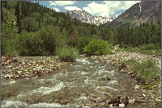 | mountainstream.png | RGB | (512, 768) | origin |
| 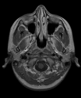 | mri-stack.tif | Gray | (226, 186, 27) | |
| 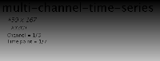 | multi-channel-time-series.ome.tif | Gray | (167, 439, 3, 7) | |
| 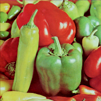 | Peppers (color), peppers_color.tif | RGB | (512, 512) | origin |
| 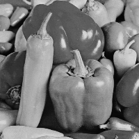 | peppers_gray.tif | GrayA | (512, 512) | |
| 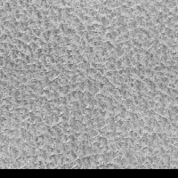 | Brodatz - Pigskin (D92), pigskin_512.tiff | Gray | (512, 512) | origin, by Phil Brodatz |
| 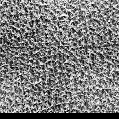 | Brodatz - Pigskin (D92) Histogram Equalized, pigskin_he_512.tiff | Gray | (512, 512) | origin, by Phil Brodatz |
| 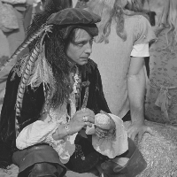 | pirate.tif | Gray | (512, 512) | origin |
| 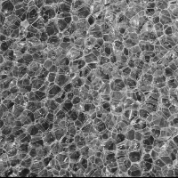 | ****, plastic_bubbles_512.tiff | Gray | (512, 512) | origin, by Phil Brodatz |
| 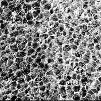 | Brodatz - Plastic bubbles (D112) Histogram Equalized, plastic_bubbles_he_512.tiff | Gray | (512, 512) | origin, by Phil Brodatz |
| 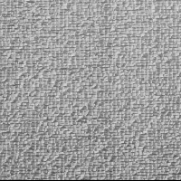 | Brodatz - Raffia (D84), raffia_512.tiff | Gray | (512, 512) | origin, by Phil Brodatz |
| 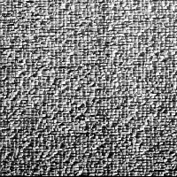 | Brodatz - Raffia (D84) Histogram Equalized, raffia_he_512.tiff | Gray | (512, 512) | origin, by Phil Brodatz |
| 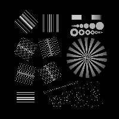 | Resolution test chart (1920 pixel), resolution_test_1920.tif | Gray | (1920, 1920) | origin, by Kai Wicker |
| 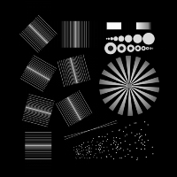 | Resolution test chart (512 pixel), resolution_test_512.tif | Gray | (512, 512) | origin, by Kai Wicker |
A 3D test image of a ball with some extra structure (64pixel in each dimension), simple_3d_ball.tif | Gray | (64, 64, 64) | by Rainer Heintzmann | |
A simple 3D point spread function of a circular aperture (64pixel in each dimension), simple_3d_psf.tif | Gray | (64, 64, 64) | by Rainer Heintzmann | |
| 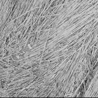 | Brodatz - Plastic bubbles (D112), straw_512.tiff | Gray | (512, 512) | origin, by Phil Brodatz |
| 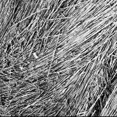 | Brodatz - Plastic bub Histogram Equalizedbles (D112), straw_he_512.tiff | Gray | (512, 512) | origin, by Phil Brodatz |
| 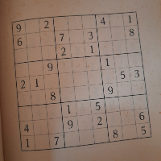 | Sudoku image, sudoku.tiff | RGB | (512, 512) | by Ashwani Rathee |
| 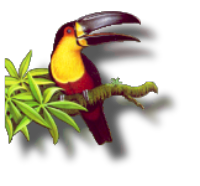 | toucan.png | RGBA | (150, 162) | |
walkbridge.tif | GrayA | (512, 512) | origin | |
Brodatz - Water (D38), water_512.tiff | Gray | (512, 512) | origin, by Phil Brodatz | |
Brodatz - Water (D38) Histogram Equalized, water_he_512.tiff | Gray | (512, 512) | origin, by Phil Brodatz | |
woman_blonde.tif | Gray | (512, 512) | ||
woman_darkhair.tif | Gray | (512, 512) | ||
Brodatz - Wood grain (D68), wood_grain_512.tiff | Gray | (512, 512) | origin, by Phil Brodatz | |
Brodatz - Wood grain (D68) Histogram Equalized, wood_grain_he_512.tiff | Gray | (512, 512) | origin, by Phil Brodatz | |
Brodatz - Woolen cloth (D19), woolen_cloth_512.tiff | Gray | (512, 512) | origin, by Phil Brodatz | |
Brodatz - Woolen cloth (D19) Histogram Equalized, woolen_cloth_he_512.tiff | Gray | (512, 512) | origin, by Phil Brodatz |
{kind=link}
{kind=link}
{kind=link}
{kind=link}
{kind=link}
{kind=link}
{kind=link}
{kind=link}
{kind=link}
{kind=link}
{kind=link}
{kind=link}
{kind=link}
{kind=link}
{kind=link}
{kind=link}
{kind=link}
{kind=link}
{kind=link}
{kind=link}
{kind=link}
{kind=link}
{kind=link}
{kind=link}